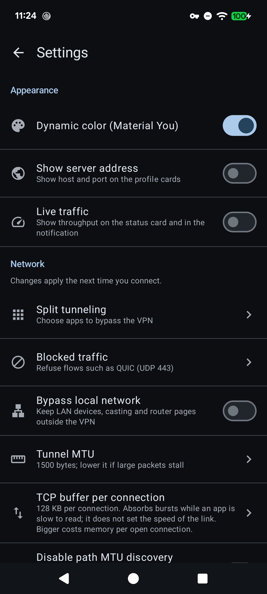

快在看得見的地方
QUIC fastOpen 預設開啟，新連線少一個往返；20 秒心跳維持工作階段，又不會頻繁喚醒無線電。
分享連結裡本來就有的東西，用一個會告訴你哪裡出錯的介面呈現，而不是丟一串日誌給你。
QUIC fastOpen 預設開啟，新連線少一個往返；20 秒心跳維持工作階段，又不會頻繁喚醒無線電。
兩種位址族別都有完整路由。IPv4 字面量、加括號的 IPv6 字面量與網域名稱都能用，包含只有 A 或只有 AAAA 記錄的節點。
貼上 hysteria2://、離線掃 QR，或直接從瀏覽器點連結。已連線時切換節點會自動重建通道。
Wi-Fi 與行動網路互換時約一秒重啟 core，不用等 30 秒 QUIC 閒置逾時；TUN 與通道引擎保持運作。
以套件為單位把 App 排除在 VPN 外；也可選擇讓 RFC1918、link-local、CGNAT 與 multicast 留在本地，印表機、NAS 與投放才不會斷。
在通道內按協定與 port 拒絕流量。QUIC（UDP/443）預設封鎖，因為 Hysteria 無法加速它；被封鎖的 TCP port 會立刻收到 RST。
狀態卡把 core 日誌翻成一句話：名稱解析失敗、TLS 失敗、密碼被拒、沒有回應、混淆密碼不符。原始日誌仍保留在診斷匯出裡。
節點存在 App 私有 DataStore。沒有帳號、沒有分析、沒有 crash SDK；備份與匯出的日誌都會遮蔽 auth 與混淆密碼。
動態取色、深色與淺色主題、快速設定磚，以及七種介面語言。


APK 由 CI 從這個 repo 的原始碼建置並簽章，不需要帳號，也不用經過商店。
現代手機用 arm64-v8a；不確定架構就用通用版，檔案大一點但一定能跑。
Android 會問一次是否允許瀏覽器或檔案管理器安裝未知來源 App。若第一次下載不完整，重新下載即可。
開 App，按 +，貼上分享連結或掃供應商給的 QR。整個過程不會上傳到任何地方。
同意 VPN 提示。Android 17 會再問一次本機網路權限，拒絕也不影響連公網節點。
從 debug 版升級？debug 與 release 使用不同金鑰，Android 不會允許覆蓋， 請先解除安裝 debug 版（裡面的節點會一起消失）。release 簽章憑證的 SHA-256 指紋列在下方， 可以拿來核對下載的檔案。
Hy2droid 是本機的代理客戶端，不是服務；沒有後端可以收集任何東西。
伺服器、密碼、SNI 與混淆金鑰都存在 App 私有空間。自動備份會遮蔽機密，診斷匯出也會一併移除。
沒有 Firebase、沒有 Play 服務、沒有廣告 ID、沒有第三方 crash 回報。唯一的連線就是通道連到你自己指定的伺服器。
預設在通道內回答 A 查詢、把名稱交給伺服器解析；需要時可切到轉發模式，或指定自己的 IPv4／IPv6 DNS。
給想在安裝前先確認的人。
VpnService，IPv4 + IPv6 路由簡短回答，加上真正會影響使用的但書。
免費。Hy2droid 是 AGPL-3.0 的自由軟體，完整原始碼、建置腳本與 release workflow 都在 repository 裡。要花錢的只有你自己的伺服器（如果有的話）。
支援，前提是手機當下的網路到得了那個位址族別。IPv6 字面量在內部會組成 [addr]:port，只有 AAAA 的域名也能用。要注意的是 core 對雙棧域名的行為：有 A 記錄就先用 IPv4，IPv4 壞掉不會自動改走 IPv6；這時請改用只有 AAAA 的域名或直接填 IPv6 字面量。
近幾年的手機幾乎都是 arm64-v8a。armeabi-v7a 給老舊 32 位元裝置，x86_64 給模擬器與少數平板，通用版 到處都能跑但約 45 MB。
幾乎都是兩種原因：下載檔案不完整，或裝置上已有另一把金鑰簽的舊版本。先重新下載；還是不行就解除安裝舊版（debug APK 不能被 release APK 覆蓋）。
都不需要。它用 Android 的 VpnService，de-Googled ROM 也能跑。QR 掃描用 CameraX 與 ZXing 在本機完成，不經過任何網路服務。
還沒有。簽章 APK 發在 GitHub Releases，release workflow 也會產生簽章 AAB 供未來上架。F-Droid 收錄則需要讓內建的 Go core 與通道原生函式庫在 F-Droid 的 build server 裡從原始碼重建，那是另一個獨立工程。
只支援 Hysteria 2。這是刻意的取捨：一個節點就是分享連結裡的那幾個值，不是通用代理設定。
預設模式在通道內回答 A 查詢，設計上不提供 AAAA；這是常見情境下最快的方式。如果需要連 IPv6-only 的目的地，請到「設定 → 網路」關掉「在通道內回答 DNS」，改用轉發解析器或自訂 DNS。這不影響連 IPv6-only 的伺服器。